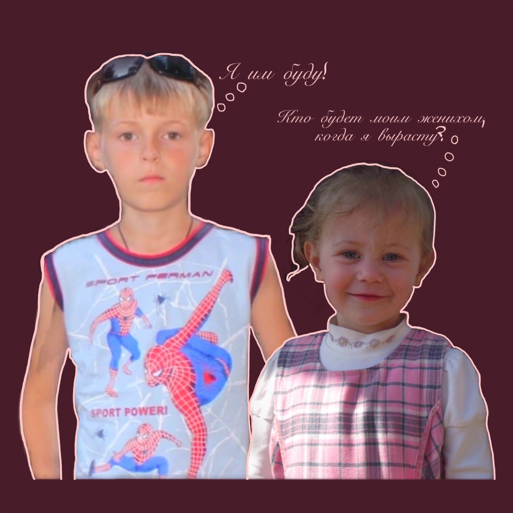

Загружаем приглашение...
Антон
Анастасия
02 августа 2026

Дорогие гости
В нашей жизни скоро состоится важное событие — наша свадьба!
Мы приглашаем вас и будем рады провести этот особенный день в кругу самых близких людей!
Место проведения
Липецкая область, Усманский район,
с. Никольское, Советская ул., 71
Будем счастливы
видеть вас!